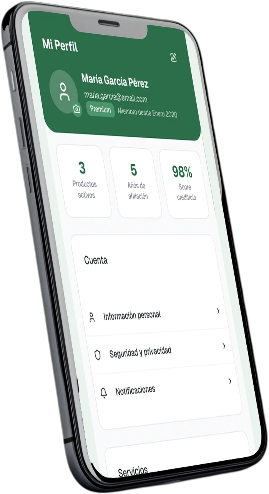
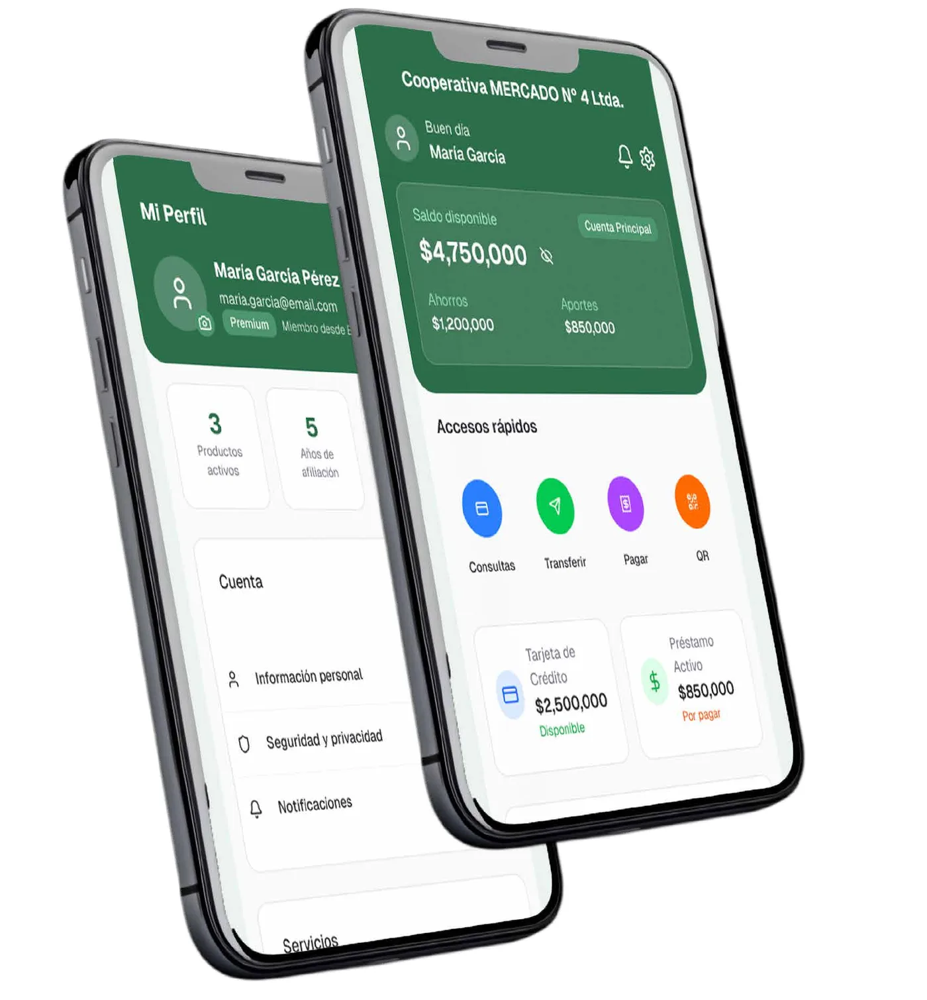

CENCO SOCIO
Sobre el proyecto
Es una aplicación financiera para socios de cooperativas, parte de una trilogía de productos conectados. Permite administrar varias cooperativas con un solo usuario: ver saldos, transacciones y movimientos en un lugar central, con accesos rápidos a consultas, transferencias, pagos y QR.

Marca y láminas

1 / 1
Mi colaboración
- Diseño de la experiencia móvil del socio: perfil, saldos, accesos rápidos y movimientos.
- Definición del flujo para operar con varias cooperativas desde una única cuenta.
- Diseño con Figma Make, una herramienta de IA que agiliza el proceso: a partir de una descripción clara de la marca, el proyecto se desarrolló rápido y cumplió con los requerimientos y plazos del cliente.